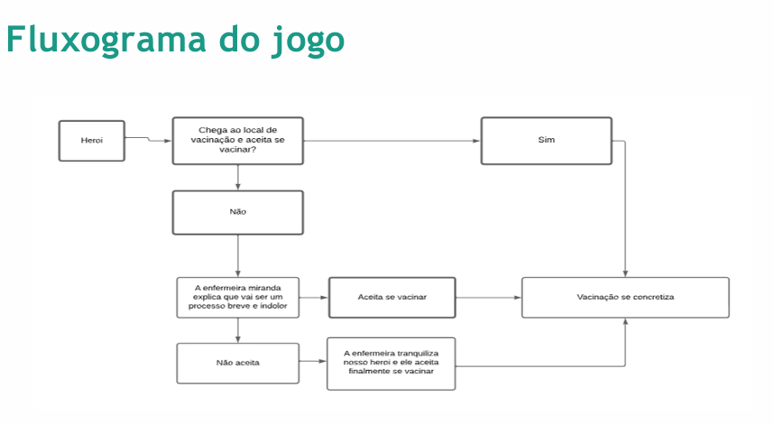
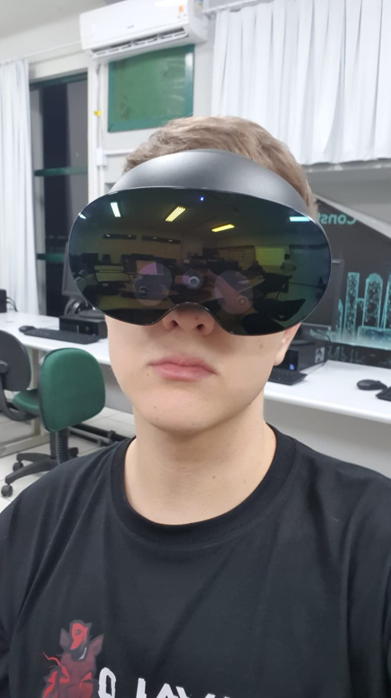

<!-- Personal Projects Section Component -->
<section id="projects" class="section projects-section">
    <div class="section-content">
        <h2 data-i18n="projects.title"></h2>

        <div class="projects-container">
            <!-- Project 1: Steam Stats Analytics Platform -->
            <div class="project-single">
                <div class="project-carousel">
                    <div class="carousel-container">
                        <div class="carousel-slide active">
                            
                        </div>
                        <div class="carousel-slide">
                            
                        </div>

                        <!-- Carousel Controls -->
                        <button class="carousel-btn prev-btn" aria-label="Previous image">
                            <span>‹</span>
                        </button>
                        <button class="carousel-btn next-btn" aria-label="Next image">
                            <span>›</span>
                        </button>

                        <!-- Carousel Indicators - APENAS 2 para 2 imagens -->
                        <div class="carousel-indicators">
                            <button class="indicator active" aria-label="Go to slide 1"></button>
                            <button class="indicator" aria-label="Go to slide 2"></button>
                        </div>
                    </div>
                </div>

                <div class="project-content">
                    <h3 data-i18n="projects.items.0.title">Steam Stats Analytics Platform</h3>
                    <div class="project-tags">
                        <span class="project-tag">Python</span>
                        <span class="project-tag">PostgreSQL</span>
                        <span class="project-tag">Docker</span>
                        <span class="project-tag">Steam API</span>
                    </div>

                    <!-- Descrição que será traduzida via JavaScript -->
                    <p class="project-description" data-i18n="projects.items.0.description">
                        Platform for analyzing Steam game statistics, tracking player counts, reviews, and market data.
                        Features real-time analytics, historical data tracking, and predictive trends for game popularity.
                        Built with a microservices architecture using Python for data collection and Spring Boot for the backend API.
                    </p>

                    <div class="project-links">
<!--                        <a href="#" class="project-link" target="_blank">-->
<!--                            <span class="link-icon">🚀</span> <span data-i18n="projects.viewDemo">View Demo</span>-->
<!--                        </a>-->
                        <a href="#" class="project-link" target="https://github.com/guidebrida/Average-Victoria-3-Players-Progress">
                            <span class="link-icon">💻</span> <span data-i18n="projects.viewCode">View Code</span>
                        </a>
                    </div>
                </div>
            </div>

            <!-- Project 2: VR Clinical -->
            <div class="project-single">
                <div class="project-carousel">
                    <div class="carousel-container">
                        <!-- Substitua essas imagens do Unsplash pelas imagens reais do seu projeto VR -->
                        <div class="carousel-slide active">
                            
                        </div>
                        <div class="carousel-slide">
                            
                        </div>
                        <div class="carousel-slide">
                            
                        </div>

                        <!-- Carousel Controls -->
                        <button class="carousel-btn prev-btn" aria-label="Previous image">
                            <span>‹</span>
                        </button>
                        <button class="carousel-btn next-btn" aria-label="Next image">
                            <span>›</span>
                        </button>

                        <!-- Carousel Indicators - 3 para 3 imagens -->
                        <div class="carousel-indicators">
                            <button class="indicator active" aria-label="Go to slide 1"></button>
                            <button class="indicator" aria-label="Go to slide 2"></button>
                            <button class="indicator" aria-label="Go to slide 3"></button>
                        </div>
                    </div>
                </div>

                <div class="project-content">
                    <h3 data-i18n="projects.items.1.title">VR Clinical</h3>
                    <div class="project-tags">
                        <span class="project-tag">Unity</span>
                        <span class="project-tag">C#</span>
                        <span class="project-tag">Blender</span>
                        <span class="project-tag">VR Development</span>
                        <span class="project-tag">3D Modeling</span>
                        <span class="project-tag">Game Development</span>
                    </div>

                    <p class="project-description" data-i18n="projects.items.1.description">
                        Virtual reality game developed to help children during vaccination and blood collection procedures.
                        Uses immersive VR environments to reduce anxiety and pain perception through distraction therapy.
                        Features interactive scenarios, calming environments, and gamified elements to engage young patients
                        during medical procedures. Developed with Unity, C#, and custom 3D models created in Blender.
                    </p>

                    <div class="project-links">
                        <a href="#" class="project-link" target="https://github.com/guidebrida/VR-CLINICAL">
                            <span class="link-icon">💻</span> <span data-i18n="projects.viewCode">View Code</span>
                        </a>
                    </div>
                </div>
            </div>
        </div>
    </div>
</section>